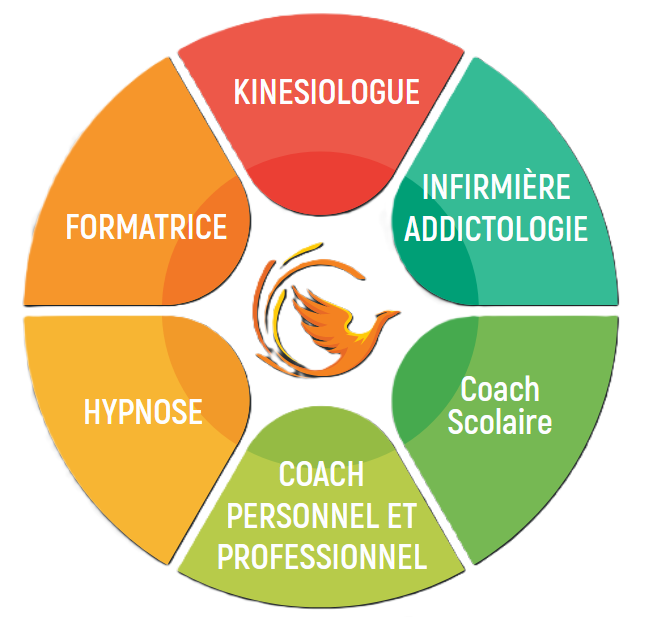

Infirmière depuis 20 ans, formée à la kinésiologie, au coaching et à l’hypnose, je vous accompagne avec écoute et bienveillance dans les périodes de stress, de changement ou de questionnement.
Des accompagnements personnalisés pour vous aider à mieux comprendre ce que vous traversez, mobiliser vos ressources et avancer à votre rythme.
Accompagnements individuels à [ville] et/ou à distance
Il arrive que l’on se sente stressé, fatigué, perdu ou bloqué dans une situation. Dans ces moments, être accompagné peut permettre de déposer ce que l’on vit, de retrouver de la clarté et d’identifier de nouvelles ressources.
Forte de mon expérience dans le domaine du soin et de mes formations en kinésiologie, coaching et hypnose, je vous propose un accompagnement personnalisé, dans un cadre d’écoute, de respect et de confidentialité.
Une approche d’accompagnement qui permet d’explorer certains déséquilibres liés au stress, aux émotions et aux expériences vécues.
Un accompagnement pour clarifier une situation, définir vos objectifs et avancer concrètement dans un changement personnel ou professionnel.
Une approche qui aide à mobiliser vos ressources et à favoriser un travail de changement, dans le respect de votre rythme.
Découvrez l'ensemble des expertises proposées pour vous accompagner vers votre mieux-être :
